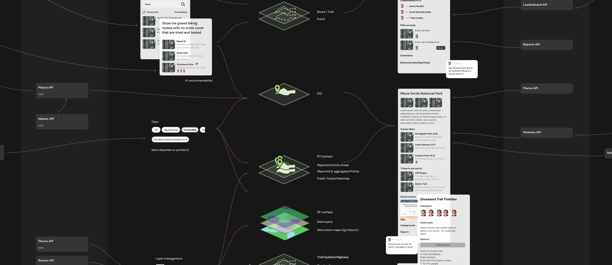
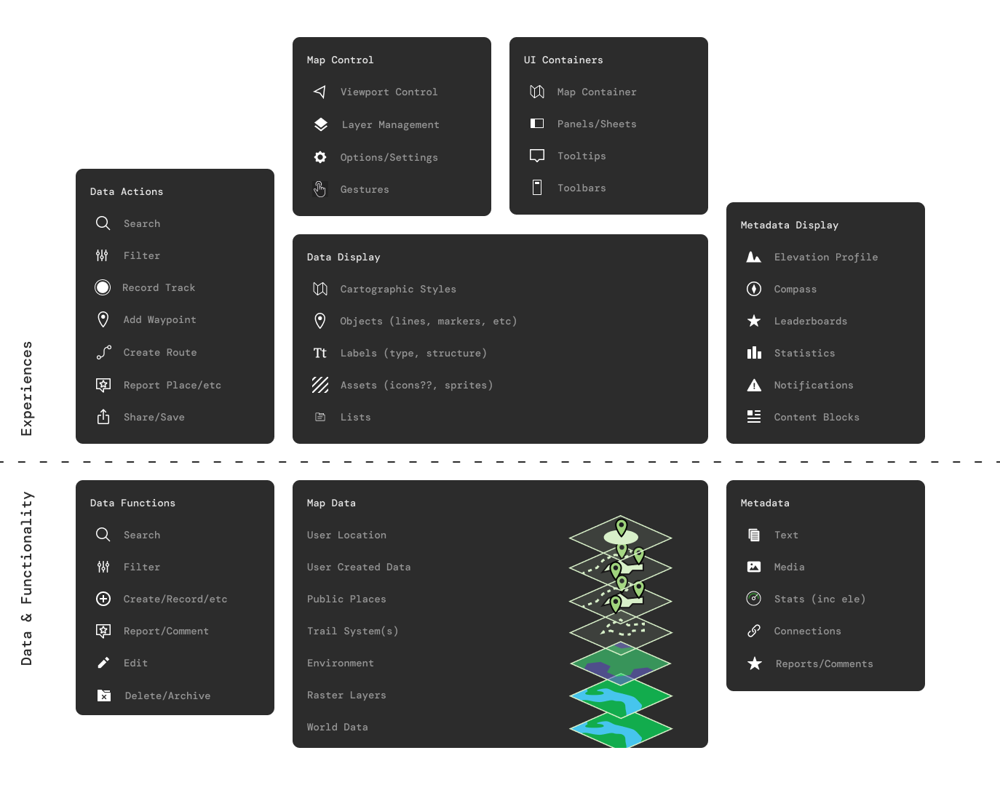
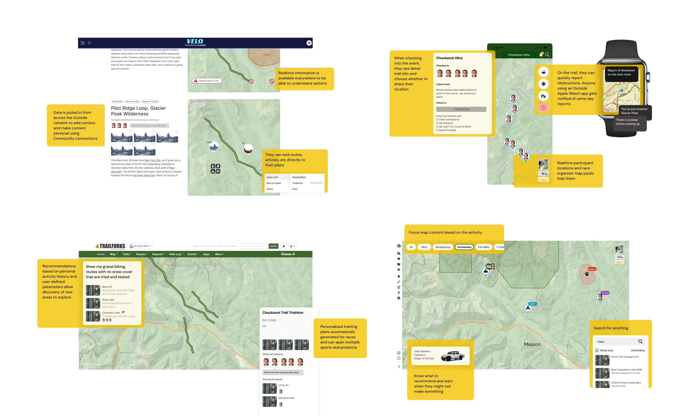

Architecting a centralized geospatial data platform to eliminate technical debt and enable cross-ecosystem product innovation.
Overview
Architecting the shared geospatial primitives and data layers for Outside's multi-brand ecosystem to eliminate technical duplication and enable cross-product experiences.
Context
Outside's portfolio (including Gaia GPS, Trailforks, and MapMy) is fundamentally built around maps. Yet, despite geospatial data being our core competency, the organization treated maps as isolated, disposable features. There was no shared vocabulary across teams—concepts like "Layers," "Tracks," and "Waypoints" meant entirely different things depending on who you asked.
Opportunity
Design a platform-level architecture to:
- Stop the massive technical duplication of solving the same rendering and data storage problems three times over.
- Establish a universal "Map Anatomy" framework to act as a binding contract between Design and Engineering.
- Transition the company from building isolated app features to funding a centralized Maps Platform.
Challenge
The core friction wasn't just technical; it was a "Tower of Babel" organizational problem. We couldn't just start designing screens or APIs. We had to completely decouple the "Experience" (what the user touches) from the "Functionality" (the data services) across fiercely independent product silos.
Approach
I stepped back from production design entirely to focus on system decomposition and conceptual modeling:
- Created the "Map Anatomy" framework, dividing the map ecosystem into two strict layers: The Experience Layer (UI containers, interactions, product-owned) and The Data Layer (Tilesets, location services, platform-owned).
- Partnered with engineering leads to translate these abstract concepts into concrete Shared Services (e.g., universal Search, Route Storage, and Offline Management).
- Visualized the end-state user value: proving how a unified backend could allow a user to plan a route in Gaia, see live reports from Trailforks, and track it on an Apple Watch—all pulling from a single source of truth.


Execution
Delivered the foundational Platform Architecture and Team Charter. By framing infrastructure as a design problem, I successfully shifted the executive conversation from "pixel tweaking" to "platform funding."
Outcome
The "Map Anatomy" framework served as the catalyst for major organizational and product shifts:
- Secured Net-New Headcount: The clarity of the framework provided the exact business case required for leadership to fund and hire a dedicated Maps Platform Engineering team.
- Initiated Enterprise Data Merger: Exposed the critical need for a "Canonical Trails Database," kicking off the massive, multi-year engineering effort to merge the disparate Gaia and Trailforks datasets.
- Unblocked Product Innovation: The shared primitives directly enabled the launch of Gaia's new "Adventure Modes," allowing the interface to dynamically reconfigure itself based on the centralized data architecture.